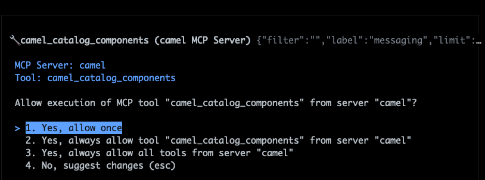
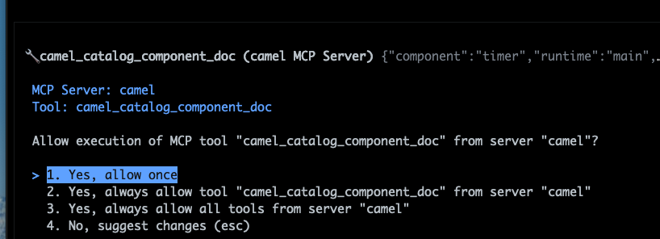
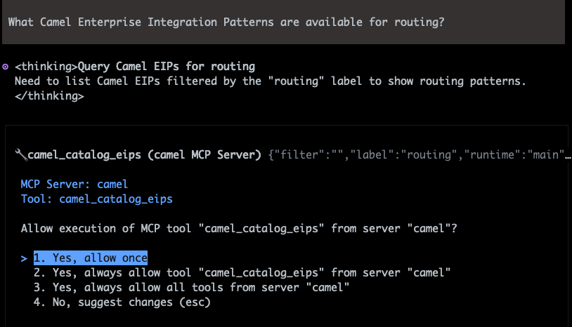
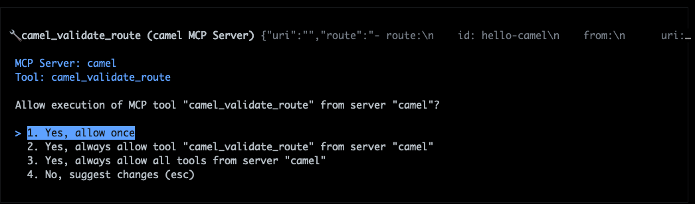

Before writing your first route, let's get to know the tool you'll use throughout this workshop. The Camel MCP Server gives AI coding assistants direct access to the Apache Camel catalog through the Model Context Protocol. Connect it to Claude Code, Copilot, or Codex, and the assistant gains knowledge of Camel's 400+ components, Enterprise Integration Patterns, data formats, and more.
Your AI assistant doesn't just know how to write code. It understands Apache Camel.
The server provides 27 tools organized into five categories:
Browse and search components by category, read full documentation, explore EIPs, data formats, expression languages, Kamelets, and query available versions.
Validate YAML routes, explain what a route does, analyze security vulnerabilities, generate JUnit 5 test skeletons, and transform between YAML and XML.
Validate OpenAPI specs for Camel compatibility, generate YAML route scaffolds from a spec, and get guidance for mock mode.
Analyze a project to detect runtime and version, check component compatibility, search migration guides, and generate OpenRewrite recipes.
Detect missing or outdated dependencies, and diagnose errors by analyzing stack traces to identify root causes and suggest fixes.
Open the AI coding assistant you configured in the Requirements step and try these prompts. Each one triggers a different MCP tool behind the scenes.
Type the following prompt into your AI assistant:
The assistant calls the camel_catalog_components MCP tool behind the scenes. Here's what it looks like in Bob Shell:

You should see components like kafka, jms, amqp, paho-mqtt5, and others.
Now pick a component and ask for its full documentation:
In Bob Shell, the assistant calls camel_catalog_component_doc:

You get endpoint parameters, default values, and usage examples. The timer component is the one you'll use in the next step to create your first route.
Ask about the patterns you'll use throughout this workshop:
In Bob Shell, the assistant calls camel_catalog_eips:

You'll get patterns like Content-Based Router, Dynamic Router, and Recipient List. Several of these show up in later steps when you build intelligent data pipelines.
Ask the assistant to validate a route definition. Type the prompt and paste the YAML below:
In Bob Shell, the assistant calls camel_validate_route:

The assistant validates the route against the Camel YAML DSL schema and checks that the timer component parameters are correct. Try introducing a typo (say, change period to peroid) and the validation will catch it.
Note
The MCP tools run entirely on your machine. No route data is sent to external services. The Camel MCP Server uses the local Camel catalog bundled with the JBang runner.
Now that you've seen what the Camel MCP Server can do, time to create your first route. In the next step, you'll use the timer component you just explored to build a Camel route and visualize it in Kaoto.